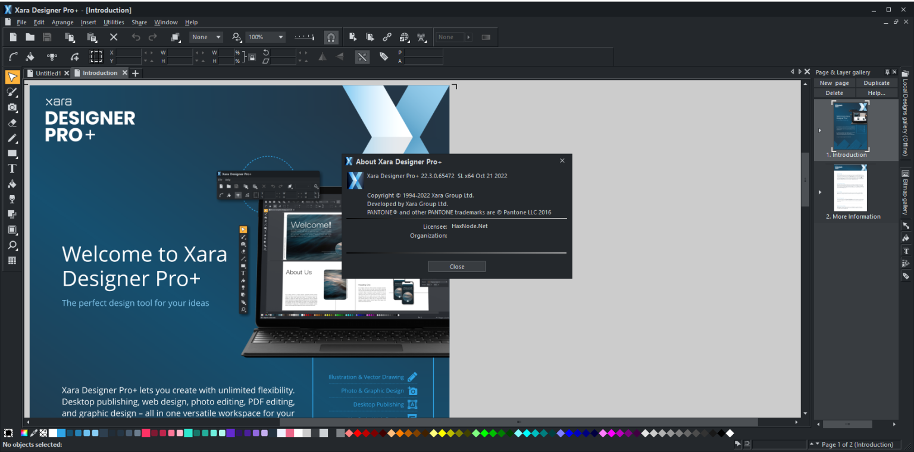

Info:
!!! Remember I don't own or edit anything on links that might be on this torrent!!!
Xara Designer Pro+ Overview
Quite simply the world’s fastest graphics software. Powerful illustration tools, innovative photo editing, flexible page layout and unrivalled WYSIWYG web design. A single application for all your creative work. Xara Designer Pro is our flagship product and includes all the illustration, photo editing, DTP and web design features of Photo & Graphic Designer, Web Designer Premium and Page & Layout Designer.
Key Features of Xara Designer Pro+
One Integrated Program
Xara Designer Pro is our flagship all-in-one creative title. In one completely integrated and consistent interface it provides all the tools for a range of graphic design tasks that would normally require three or more separate ‘suite’ programs: illustration, photo editing, advanced page layout, web graphics, websites and more.
Speed
Xara Designer Pro is based on one of the world’s most sophisticated, high performance vector rendering engines. The ultra fast processing, even with complex illustrations or very high resolution photos, makes it a pleasure to experiment. Don’t let your software get in the way of your creativity!
Direct Action Tools
Xara Designer Pro’s Direct Action Tools allow you to create effects such as transparency, shadows, bevels or gradient fills in an interactive, fast and intuitive way. No distracting dialogs – simply drag on the object!
Easy Drag & Drop
Many tasks in Xara Designer Pro benefit from being able to use the drag and drop principle, which is the most intuitive way of working and a great time saver. It also supports drag and drop import of files, such as photos.
Infinite Undo / Redo
Being able to change what you have done is vital in a graphics package. Xara Designer Pro allows unlimited undo, making experimentation easy.
Zoom to 25,000%
The Zoom tool allows magnification up to 25,000%, perfect for detailed work. And it’s super-fast and resolution independent too.
Top Quality Screen Display
Xara introduced the world’s first vector anti-aliasing to bring maximum screen quality and is still a pioneer with the fastest, highest quality anti-aliasing available in any drawing program.
Solid Object Editing
Instead of dragging outlines when you draw, move, rotate or resize objects, Designer Pro offers solid live object manipulation, which simply makes it much easier to see what you’re doing! Only Designer Pro is fast enough to do this on complex vector graphics.
All the Design Tools You Need
Designer Pro offers everything you need for handling text in your designs. You can enter your text at any angle and you can also set your text along a curved path. Additionally, just like any drawn object in Designer Pro, you can freely resize it on the page, and produce creative display text by applying any of the effects, such as transparency, fills, molds and so on – and yet the text remains editable.
Page Layout
Designer Pro offers everything you need for professional DTP, combining advanced text controls with flexible page layout features such as drag and drop editing of images and automatic text flow around objects.
VirusTotal:
Setup:
https://www.virustotal.com/gui/file/7f0fc135788b8e84c41ea72c3abc298c36e7659eaded2c07b84234e47fe36b2f/detection
Loader:
https://www.virustotal.com/gui/file/7801870f7d4432af2387cfb3c089bf24a492ddab008197531fe8feacf4539a11/detection
Xara Designer Pro+ Screenshots
